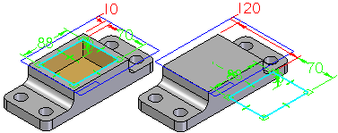
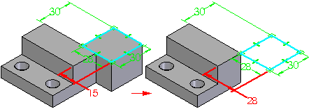
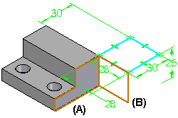
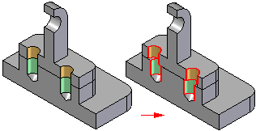

Errors command
The Errors command  tracks items in parts and assemblies that have failed to recompute properly so you
can fix them. The Errors command prevents such changes from causing unnoticed problems in your Solid Edge
documents, and makes it easier to find, evaluate, and fix the errors.
tracks items in parts and assemblies that have failed to recompute properly so you
can fix them. The Errors command prevents such changes from causing unnoticed problems in your Solid Edge
documents, and makes it easier to find, evaluate, and fix the errors.
As you edit documents, you should periodically check the Errors button to see if errors have occurred. Errors are also indicated using special symbols within PathFinder in part and assembly documents. The Errors command is not available unless an error occurs.
The following types of errors are tracked by Error Assistant:
-
In the synchronous Part environment, the Error Assistant tracks features that fail.
-
In the ordered Part, Sheet Metal, and Assembly environments, the Error Assistant tracks features that fail to recompute properly.
-
In the Assembly environment, the Error Assistant also tracks under-constrained parts and parts whose positions fail to recompute.
-
When working in Exploded View Mode in the Assembly environment, Error Assistant also tracks parts that have lost their parents. A part will lose its parent if the parent part is hidden using the Remove command.
Feature errors
Ordered feature errors typically occur when making design changes that have unanticipated effects on your model.
Two common types of errors are:
-
Editing a cutout feature such that no material is removed.
-
Editing a feature such that non-manifold topology is created.
Cutouts with no material removal
If you construct a ordered cutout in a part, then edit the cutout dimensions such that no material is removed from the model, the feature fails. Solid Edge determines that this is an invalid condition for a cutout feature, and the Errors command button is activated. For example, if you edit the 10 millimeter dimension to 120 millimeters, the cutout feature will no longer remove material from the part.

Non-manifold topology in models
If you construct an ordered protrusion in a part, then edit the protrusion dimensions such that non-manifold topology is constructed, the feature fails. Solid Edge determines that this is an invalid condition, and the Errors command button is activated.
Non-manifold topology is where two or more faces on a single body are connected at a theoretical point or line and form a zero thickness edge.
For example, if you edit the 15 millimeter dimension to 28 millimeters, a zero thickness edge is created where the faces meet.

Displaying errors
When you display the Error Assistant dialog box, a list of errors is displayed, their reasons, and the corrective action you can take to fix the error. When you click an error in the list, the display in the graphics window is updated to show you the design elements that are impacted by the error.
For example in ordered, when non-manifold topology exists, you can click the entry in Error Assistant, and the display updates to show the model faces (A) (B) which are causing the error.

Fixing errors
You can use the buttons on the dialog box to fix the error or delete the elements. For example, if you are making a significant design change to an assembly and delete a part that is no longer needed, other parts that depended on the deleted part could be affected. You can then use the Error Assistant dialog box to find the problems, and fix them as required.
Assembly errors
The position for a part in an assembly might fail to recompute because a design change was made to an adjacent part that prevents an assembly relationship from recomputing properly.
For example, if you position a part with axial align relationships using cylindrical faces on an adjacent part, then edit the adjacent part such that the faces between the two parts can no longer be axially aligned, the relationships will fail to recompute and the part is then added to the list in Error Assistant.

The position for a part also might fail to recompute because you deleted or suppressed a feature on an adjacent part that was used to position the part.
When assembly relationship errors exist, you can use the Error Assistant button on the Error Assistant dialog box to open Assembly Relationship Manager. The Assembly Relationship Manager shows the sick and failed relationships. You can use shortcut commands to suppress, delete or edit the relationships.
How do I
Analyze and edit failed profiles with Profile Error AssistantTrack and fix failed features
Track and fix failed parts in an assembly
Look up more details
Error Assistant dialog box (Part and Sheet Metal environments)Error Assistant Dialog Box (Assembly environment)
Error Assistant Dialog Box (Exploded Views)
Profile Error Assistant dialog box
Investigate Error command
Investigate Error dialog box